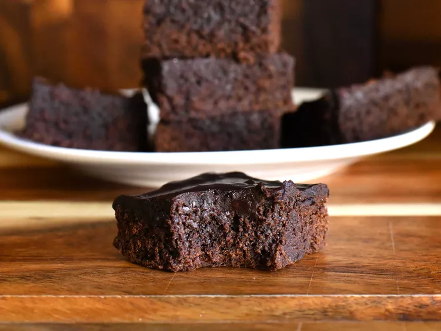

Best Brownies

Description
This brownie recipe makes rich, fudgy brownies that always turn out well. They're topped with homemade chocolate frosting to make the best brownies ever!
Ingredients
- 1/2 cup butter
- 1 cup white sugar
- 2 large eggs
- 1 teaspoon vanilla extract
- 1/3 cup unsweetened cocoa powder
- 1/2 cup all-purpose flour
- 1/4 teaspoon salt
- 1/4 teaspoon baking powder
Frosting:
- 3 tablespoons butter, softened
- 3 tablespoons unsweetened cocoa powder
- 1 tablespoon honey
- 1 teaspoon vanilla extract
- 1 cup confectioners' sugar
Steps
- Preheat the oven to 350°F (175°C). Grease and flour an 8-inch square pan.
- In a large saucepan, melt 1/2 cup butter. Remove from heat, and stir in sugar, eggs, and 1 teaspoon vanilla. Beat in 1/3 cup cocoa, 1/2 cup flour, salt, and baking powder. Spread batter into prepared pan.
- Bake in preheated oven for 25 to 30 minutes, until the top is dry and edges have started to pull away from the sides of the pan. Let it cool briefly before frosting.
- To make the frosting combined the softened butter, confectioners' sugar, 3 tablespoons cocoa, honey and 1 teaspoon vanilla extract in a bowl. Stir until smooth, frost brownies while they are still warm but slightly cooled.
Home